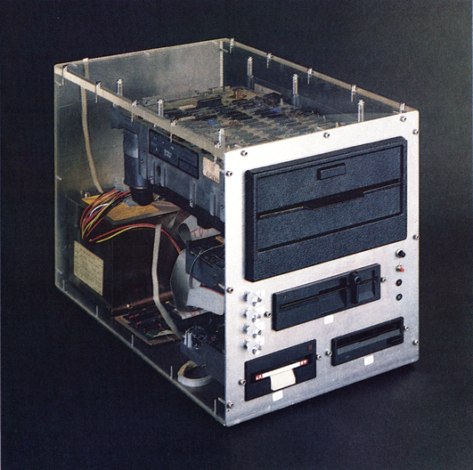
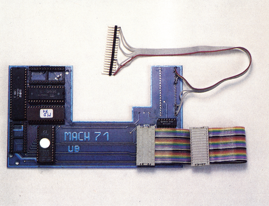

Weltneuheiten für den C 64
Technische Innovation und gute Ideen werden nicht nur in großen Laboratorien geboren. Gerade mittlere Unternehmen wie Roßmöller, die sich auch mit kleineren Computern beschäftigen, leisten oft Erstaunliches.
Als erstes Computermagazin in Deutschland stellen wir Ihnen im folgenden drei Weltneuheiten für den C 64 vor, doch dazu später mehr.
Zuerst wollten wir etwas mehr über Roßmöller wissen, denn immerhin gibt es diese Firma seit rund fünf Jahren. Martin Roßmöller gab uns Auskunft: »Angefangen hat alles mit einer kleinen Produktionsstätte, in der wir für die CBM-Computer und den VC 20 Erweiterungen gebaut haben. Das war 1981. Im Jahre 1983, mit dem absehbaren Erfolg des C 64, kam dann auch für uns der Zeitpunkt der Expansion. Eine GmbH wurde gegründet und mit dem »EPROM 64« EPROM-Brenner hatten wir einen riesigen Erfolg. Im September 1984 folgte dann Turboaccess, das entgegen der vorherrschenden Meinung tatsächlich der erste Parallel-Speeder für die 1541 war. Seit August 1985 haben wir eine zweite Firma gegründet — die »Roßmöller Computer Tuning« — und gleichzeitig ein Ladengeschäft in Bonn eröffnet. So haben wir uns im Laufe der Zeit mit vielen Produkten und immer neuen Ideen zu einem der führenden Hersteller von Hardware-Zusätzen für C 64 und C 128 entwickelt«.
Soviel zur Geschichte von Roßmüller. Wie man sieht, existiert diese Firma schon relativ lange, was auf dem schnellebigen Computer-Markt sicherlich keine Kleinigkeit ist.
C 64 mit neuem Glanz
Daß Roßmöller einer der führenden Hersteller für Hardware-Erweiterungen ist, daran dürfte kein Zweifel bestehen, denn dieses Mal wurden uns drei echte Weltneuheiten vorgeführt. Die erste Neuheit ist ein Shugart-kompatibler Bus, der den Anschluß eines jeden Laufwerks an den C 64 ermöglicht, das die Shugart-Norm erfüllt. Die meisten Diskettenlaufwerke in der Industrie und auch bei Personal und Heim-Computern verwenden eine Norm, nach der sie an einen Controller angeschlossen werden können (ähnlich einem Drucker mit Centronics-Schnittstelle).
Für den C 64 gibt es nun eine Platine, die dem Anwender einen solchen genormten Bus zur Verfügung stellt. Sie können also in Zukunft sehr preiswerte Laufwerke, wie sie mittlerweile bereits für unter 100 Mark auf dem Markt angeboten werden, an Ihren C 64 anschließen und mit mehreren Formaten, darunter auch das Format der 1541, arbeiten. Sehr interessant ist dabei natürlich die Möglichkeit, auch 3½- und 3-Zoll-Laufwerke zu verwenden. Es funktionieren aber auch 5¼- und 8-Zoll-Versionen.
Der Shugart-Bus besteht im wesentlichen aus einer Platine, die wie ein Floppy-Beschleuniger über den seriellen Bus und ein zusätzliches Parallelkabel an den Computer angeschlossen wird. Uns wurde zusätzlich ein Plexiglas-Gehäuse vorgestellt (Bild 1), das vier Laufwerke (3 Zoll, 3½ Zoll, 5¼ Zoll und 8 Zoll) enthält. Diese Kombination ist ohne weiteres funktionsfähig, da der Shugart-Bus bis zu vier verschiedene Laufwerke ansteuern kann. Der Preis des Shugart-Bus soll 498 Mark betragen.

IBM-Laufwerke am C 64
Die zweite Neuerung ist ein Floppy-Beschleuniger für die 1571 und zwar der erste Beschleuniger für dieses Laufwerk, der mit einem Parallelkabel arbeitet (Bild 2). »Mach 71«, so der Name des Speeders, erreicht Geschwindigkeiten beim Laden von Programmen, die gängige Beschleuniger für die 1541 teilweise übertreffen und das, obwohl bei Mach 71 von der Diskette und nicht aus einer RAM-Floppy gelesen wird.

Mach 71 ist, wie bei Roßmöller üblich, kompatibel zu den anderen Beschleunigungssystemen aus dem gleichen Haus und besteht aus einer Platine in der Floppy-Station und einer am Expansion-Port des Computers. Der Befehlssatz des Kernels im Computer ist identisch zu Turbotrans, wobei der Hersteller gleichzeitig seine große Erfahrung mit den bisherigen Systemen für den neuen Speeder verwenden konnte. Mach 71 soll laut Roßmöller 298 Mark kosten.
Eine weitere Entwicklung ist besonders für Besitzer des neuen C 64C interessant. Sie dürfte aber auch Anwender ansprechen, die sich bisher davor gescheut haben, ihren Computer aufzuschrauben, um ein neues Betriebssystem zu integrieren. Gemeint ist eine Platine, die einfach in den Expansion-Port des Computers eingesteckt wird und ohne jede Löt- oder Bastelarbeit eines oder mehrere neue Betriebssysteme zur Verfügung stellt.
Das Interessante an dieser neuen Platine ist ohne Zweifel die Tatsache, daß der RAM-Bereich im Computer unter dem Kernel, also von $E000 bis $FFFF, weiterhin freibleibt. Das sorgt für eine 100prozentige Kompatibilität der Platine zu (im Computer eingesteckten) EPROMs.
C 64 mit 4 MHz Taktfrequenz
Die wohl größte Leistung auf dem Gebiet der Hardware-Entwicklung für den C 64 haben wir Ihnen bis jetzt vorenthalten. Es handelt sich um eine eigentlich recht unscheinbare Platine, die in den Expansion-Port des C 64 eingesteckt wird. Schaltet man den C 64 nun ein, so fällt zuerst nur der sehr viel schnellere Ablauf der Reset-Routine auf. Spätestens wenn jedoch ein Grafikprogramm geladen wird, schlägt jedem C 64-Anwender das Herz höher. Kreise werden auf einmal mit einer Geschwindigkeit gezeichnet, die wahrhaftig sensationell ist. Das Ausfüllen von Flächen dauert nur noch einen Bruchteil der Zeit, die vorher dafür aufgewendet werden mußte, und das Ziehen einer langen Linie von einem Punkt bis zu einem anderen, bekommt der Betrachter gar nicht mehr mit.
Schuld daran, daß der C 64 jetzt mehr als viermal so schnell ist wie ursprünglich, ist ein spezieller 16-Bit-Prozessor auf der Zusatzkarte, der den eingebauten 6510-Prozessor schlicht und einfach »nachahmt« (emuliert). Da der neue Prozessor zusätzlich noch eine sehr viel höhere Arbeitsgeschwindigkeit an den Tag legen kann, wird der C 64 zu einem wahren »Renner« und das alles bei ausgesprochen hoher Kompatibilität zum Original-C 64.
Die Redaktion war begeistert: »Ein Superding, das Roßmöller da auf den Markt bringt.« Natürlich werden wir den neuen, schnellen C 64 noch einem ausführlichen Test unterziehen. Durch die 4 MHz Taktfrequenz bekommt der C 64 ohne Zweifel neuen Glanz. Auch eine Speichererweiterung von bis zu 16 MByte (!) wird durch die Karte im Expansion-Port möglich. Und das alles, ohne daß Sie Ihren Computer aufschrauben müssen. Für die Spiele-Freaks unter Ihnen wurde bei der 398 Mark kostenden Erweiterung auch gesorgt: Ist Ihnen ein Spiel zu schnell, so können Sie die Taktfrequenz des C 64 auch auf die Hälfte der normalen Arbeitsgeschwindigkeit schalten. Viele Spiele lassen sich dann sehr viel entspannter angehen.
(aw/ks)Bezugsquelle: Roßmöller GmbH, Maxstraße 50-52, 5300 Bonn 1, Tel. (0228) 659980